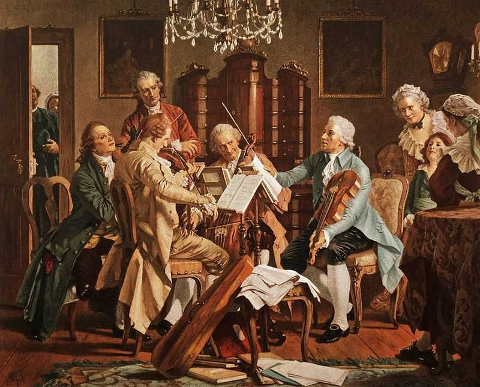
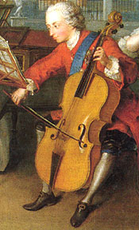
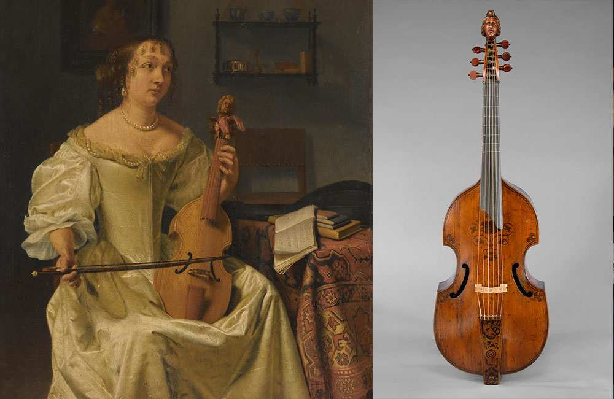
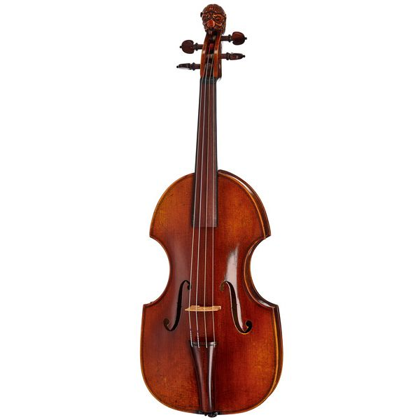
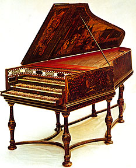
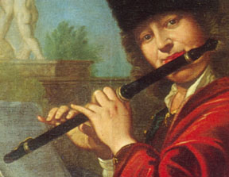
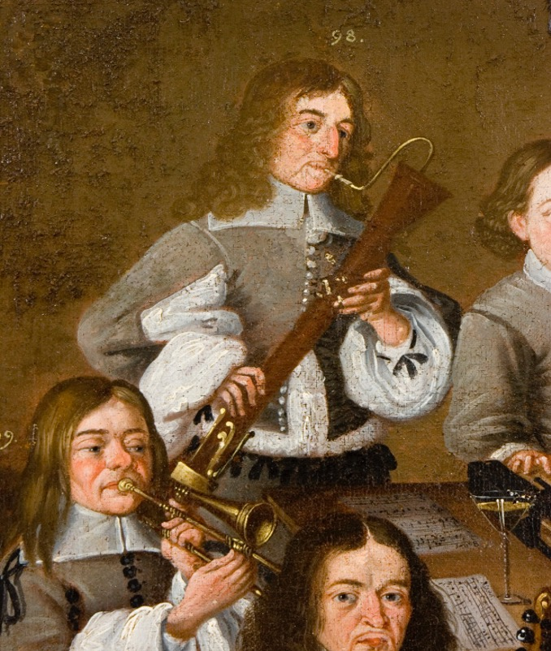
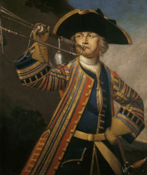
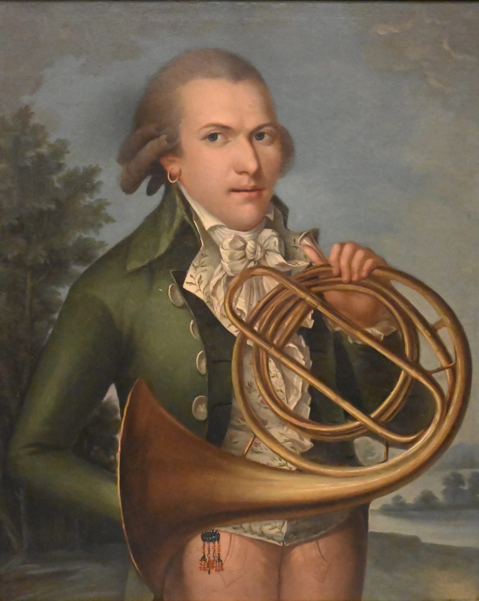
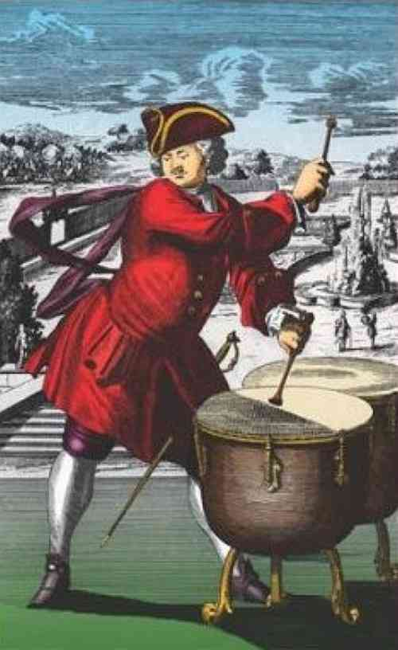

The Boom of instrumental music
4. INSTRUMENTAL MUSIC

4.1. Forms
In the Baroque period, instrumental music became independent from vocal music and the first purely instrumental forms appeared:
- Sonata: a work in several movements for a few instruments. (Sonata for Violin in G minor: The Devil’s Trill by Giuseppe Tartini).
- Suite: a succession of dances with different characters. (Suite for harpsichord in D minor. Fourth Movement: Sarabande; by Handel).
- Concerto: contrast between a soloist and the orchestra (The Four Seasons. Concerto No. 4 in F minor: L'inverno I. Allegro non molto by A. Vivaldi).
4.2. The orchestra
The orchestra is organised as a stable group of instruments, dominated by strings (violins, violas, cellos) and complemented by wind instruments and continuo. Instruments that were part of the orchestra:
String family: the violin became the central instrument of the Baroque period and the orchestra. Its expressiveness, agility and dynamics meant that many works were structured around it (such as Vivaldi's concertos). The Baroque violin, viola da gamba and cello were integrated into the orchestra as the main pillars of sound.
|  |  |  |
Plucked strings: harpsichord: essential for the basso continuo. It produces a clear, bright sound, although it does not change volume when the keys are pressed (unlike the piano). It is usually accompanied by a cello or viola da gamba to reinforce the bass line.

Woodwinds: flutes (traverso), oboe, bassoon. Wind instruments take centre stage. The traverso (baroque flute) and baroque oboe establish themselves as solo instruments in concertos and sonatas, bringing more varied colours to the orchestra.
|  |  |
 |
Brass: trumpets and horns. Used mainly in ceremonial or court music to add brilliance and grandeur (for example, in fanfares or festive passages).
|  |  |
Percussion: the appearance of the timpani is noteworthy.

4.3. Virtuosity as an artistic ideal
As we have already seen, the Baroque period saw the emergence of the virtuoso performer, capable of executing brilliant technical passages and expressing dramatic contrasts with speed and precision. Virtuosos are performers capable of:
- Playing fast, ornate phrases.
- Mastering high and low registers with ease.
- Improvising variations on a bass line or theme.
Virtuosity is particularly celebrated in concertos:
- In a solo concerto, an instrumentalist stands out against the orchestra, as in Vivaldi's Winter
- In the concerto grosso, a small group of soloists (concertino) dialogues with the orchestra (tutti).
This role of the performer transforms Baroque music: it is not enough to play well, one must move the audience with technical precision and expressive contrast.